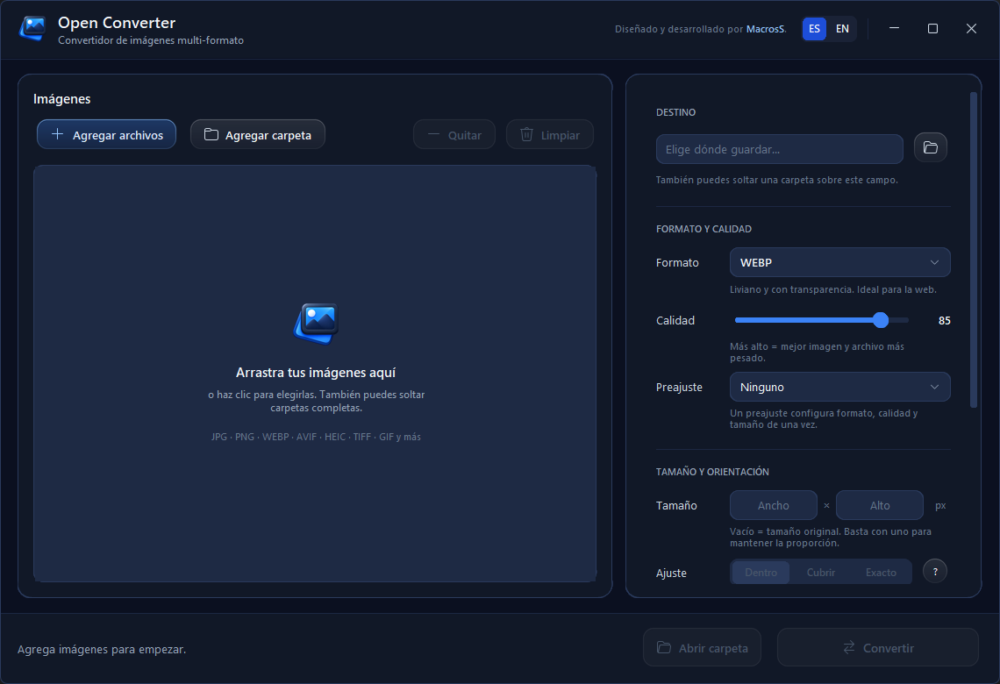

Windows
Windows 10 y 11 · 64 bits
Instalador con asistente. No pide permisos de administrador.
Descargar para WindowsOpen Converter cambia JPG, PNG, WEBP, AVIF, HEIC y más, por carpetas completas y cuidando tus colores y metadatos. Gratis y de código abierto, para Windows, macOS y Linux.
Windows 10 y 11 · macOS 11 o superior · Ubuntu 22.04 o superior

Descargar
Cada botón baja el instalador de la última versión. Sin cuentas, sin publicidad y sin registro.
Windows 10 y 11 · 64 bits
Instalador con asistente. No pide permisos de administrador.
Descargar para WindowsmacOS 11 o superior · Apple Silicon
Abre el .dmg y arrastra el programa a Aplicaciones. La primera vez, ábrelo con clic derecho y Abrir. Este es para Apple Silicon (M1 a M4); para Mac Intel, descarga esta versión.
Descargar para macOSUbuntu 22.04 o superior · 64 bits
Descomprime y ejecuta ./install.sh. Se instala solo para tu usuario y aparece en el menú de aplicaciones.
Última versión en GitHub. Todas las versiones y sumas SHA-256
Funciones
Arrastra archivos o carpetas enteras a la ventana y conviértelos de una vez. Nunca sobrescribe el original: si el nombre ya existe, agrega « (1)».
Redimensiona (dentro, cubrir o exacto), rota, voltea y pasa a escala de grises. Los preajustes Web, Miniatura, Impresión, Sin pérdida y Redes sociales configuran todo de un clic.
Conserva la fecha y la cámara, quita solo la ubicación y los números de serie, o elimina todo. El perfil de color siempre se mantiene para que los colores no cambien.
La interfaz cambia de idioma al instante y recuerda tus últimas preferencias. Funciona sin conexión: tus imágenes nunca salen de tu computador.
Formatos
Lee y escribe los formatos más usados y abre muchos más. Elige el de salida y la calidad, y el programa hace el resto.
Línea de comandos
Convierte desde scripts o la terminal con el mismo motor que la ventana. Misma calidad, mismos metadatos.
# abre la ventana $ openconverter # una imagen, con calidad y tamaño $ openconverter convert foto.heic foto.webp --quality 85 --resize 1920x # una carpeta completa $ openconverter batch ./entrada ./salida --format webp --preset web # ver los formatos disponibles $ openconverter formats